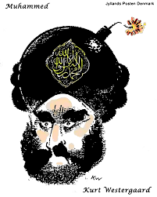

Kolonialvalg:
- Skipper mix
- Nuværende generation skal undskylde over for hvad der er sket.
Racisme I børnebøger:
- Neger --> strudsægsekspert.
- Censur I børnebøger.
Lars Von Trier:
- Kan godt lide hitler - indirekte
- Begrænsning på ytringsfrihed
- Skaber stereotyp baseret på en ting han har sagt
Kronik: Forsvarer rapvideo
Blod digte:
Religionssatire:
Præsenter din case: Redegør kort for tekstens indhold og præsenter tekstens hovedpointer.
- Umyndige mennesker: Følger præstens ord, fordi der er censur.
- Religion Satire fik sin kulmination i 1800-tallet, hvor folk fik øjnene op for satiren. Det var blevet lettere og billigere at producere tekster og billeder. Analfabetismen var godt og vel udryddet i 1800-tallet, flere kunne læse og skrive.
Gør grin med religiøs overbevisning. Ytringsfrihed med grænse.
- Eksempel: I et anonymt satire billede fra 1828 bliver borgere repræsenteret som børn der jagter bogstaver, mens censuren jagter den farlige litteratur.
Censur ophæves og derfor går den religiøse satire fra at være præget af antiklerikalisme til at være en direkte kritik af religioner (eks. gud).
- Eksempel: Antikatolsk satire.
- Efter censurens ophævelse mistede religion magten i samfundet og mange satirikere begyndte at forholde sig kritisk til økonomiske forhold, politiske ideologier, nedarvede kønsroller osv.
- Satire har haft en stor rolle i nedbrydelsen af den mere end 500 års censur der har været i europa.
Hvordan passer materialet ind i temaet: ”Begrænsninger for ytringsfriheden: Selvcensur og politisk korrekthed”?
- Alle har jo frihed til at ytre sig som noget. Dog med den baghånd at der kan ske konsekvenser ved det. Hvis nogle folk føler det provokerende, kan det medføre at man bliver set ned på i samfundet. Derfor er det vigtigt at man tænker sig om hvor man ytrer sig. Et godt eksempel er Rasmus Paludan fra partiet “stram kurs”. Rasmus laver 1-mands demonstrationer med politi forstærkning, da han ofte kommer op og skændes med folk. Ved demonstrationerne deler han sin politik omkring homoer og indvandrer. Han mener at indvandrere er samfundstabere, og det er ikke noget som de er helt glade for at høre.
- Derudover er danskerne kendt for humor, og vi har lavet satiriske tegninger. Bl.a muhammed-sagen, hvor at Kurt Westergaard, tegnede Muhammed med en bombe på hovedet. Det har skabt en større konflikt imellem folk, om hvorvidt det skulle fjernes. Nogle danskere er gode til at bryde denne begrænsning, men finder sig også i at blive set ned på af et bestemt folk.

Hvilken diskussion lægger materialet op til?
- Politisk korrekthed i 1800-tallet
- Religiøs satire i dag.
Problem: Politisk korrekted er defineret